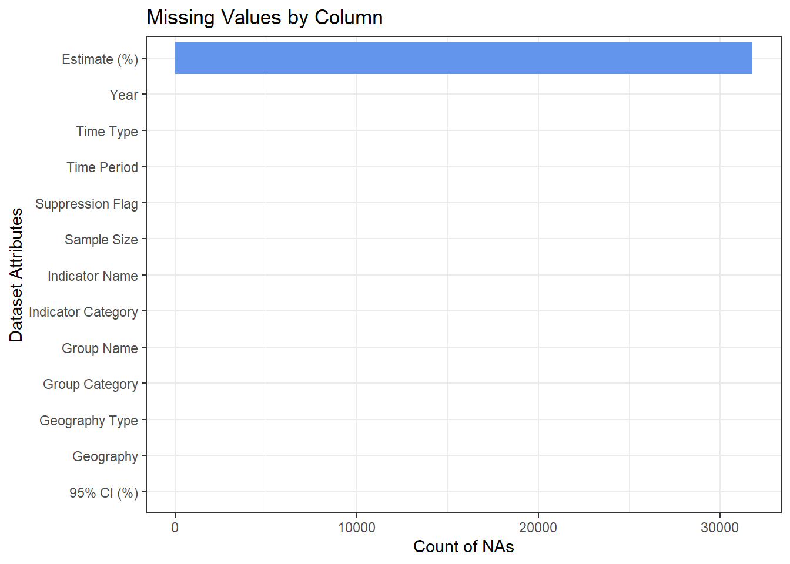
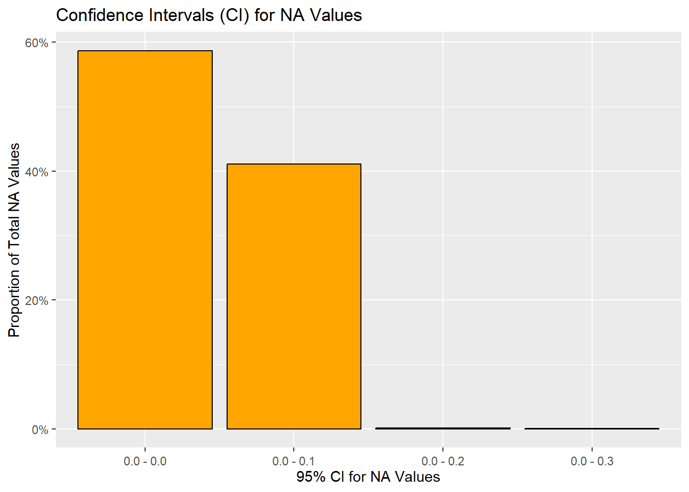

Code
# install.packages("data.table")
library(tidyverse)
library(data.table)
library(lubridate)The data source which we will use for our study is the CDC’s National Immunization Survey Adult COVID Module (NIS-ACM). It provides information on COVID-19 vaccination status and intent, segmented by geography, age, ethnicity, socio-economic status, and other characteristics. The data can be found at: https://www.cdc.gov/vaccines/imz-managers/coverage/covidvaxview/interactive/adults.html
The data was collected by the CDC through a series of telephone interviews conducted between April 2021 and June 2023 (latest sample available). Each week, the CDC surveyed between 7,500 to 20,000 US adults aged 18 years and above using a random-digit-dialed sample of cell telephone numbers. These samples were stratified by state, the District of Columbia, and five local jurisdictions (Bexar County, TX; Chicago, IL; Houston, TX; New York City, NY; and Philadelphia County, PA). During some survey periods, Guam, the US Virgin Islands, and Puerto Rico were included as well.
To correct any imbalances or biases in the sample that might arise due to the survey design or data collection methods, the CDC applied weights to the proportion of the sampled individuals giving a particular response in the survey.
The data is presented as a CSV file in a “pivot longer” format that is downloadable from the CDC’s website provided above. The exact format can be seen without exporting the data using the following link: https://data.cdc.gov/Vaccinations/National-Immunization-Survey-Adult-COVID-Module-NI/udsf-9v7b
The first four columns (Geography Type, Geography, Group Name, and Group Category) are used to characterize the segments of individuals who were surveyed, where any given Geography may contain multiple Group Names and Group Categories. For example, the Geographies “Alabama” and “New York” will each have multiple Group Names, such as “Age by race/ethnicity” or “Pregnancy status (females age 18 – 49 years)”.
The next two columns in the dataset, Indicator Name and Indicator Category, specify the vaccination status/intent variables being analyzed. Each Indicator Name is comprised of several Indicator Categories. For instance, the Indicator Name “Vaccination uptake and intention” has four possible responses such as “Probably or definitely will not get vaccinated” or “Definitely will get vaccinated”.
In addition to the combinations of geographies, participant groups, and survey questions/answers, the data is further subdivided by time period and duration of data collection, which can either be weekly or monthly.
For all the permutations mentioned above, the response rates/proportions and their corresponding confidence intervals and sample sizes are recorded in the columns Estimate (%), 95% CI (%), and Sample Size, respectively.
A complete column-by-column description of all attributes in the dataset is available in the “Columns in This Dataset” section of the page linked below: list https://data.cdc.gov/Vaccinations/National-Immunization-Survey-Adult-COVID-Module-NI/udsf-9v7b
Given that the participant demographics and combinations of survey questions and answers have been pivoted, each “row” of data represents a single observation for each segment/demographic.
The data is updated weekly, with the first samples of data having been collected the week of Apr 22 – May 1 2021 and the latest samples corresponding to the week of June 25 – June 30 2023. The CDC also aggregates its weekly estimates to determine monthly estimates.
The data contains 5.08M rows x 13 columns.
The dataset includes the following additional information, which we will not be studying, as it does not directly address the question of vaccine hesitance: - Vaccination coverage - Bivalent booster update & intention
Through data exploration and reviews of the data source documentation, we identified the following potential concerns:
All responses are self-reported & random dialed, making the data quality susceptible to misreporting by respondents.
Due to the random sampling performed, the individuals being interviewed will differ from one period of time to another. While this limits our ability to track changes in perspective from the same people over time, it is likely not going to be an issue since we are concerned with population level statistics rather than individual statistics.
The sample size in the dataset varies by demographic subgroup. Ideally, it would be stratified, but this is likely not possible due to the random-dialed survey design (i.e. the CDC cannot target phone calls to specific demographics). This is likely accounted for by the CDC’s estimate weighting technique.
There appear to be rounding errors in the response rate estimates. For any given combination of geography, participant group, question, and time period, the sum of proportions do not exactly equal 100%. This is due to the response rates in the Estimate (%) column being rounded to just one decimal point. As a result, some sub-samples sum up to 101% across all the response options specified in the Indicator Category.
The data contains NAs in the Estimate (%) column. According to the data source documentations, NAs should only be present in smaller sub-samples (<30) for which the data was intentionally suppressed. However, our data exploration revealed that groups with larger sample sizes, even surpassing 10,000, contained NAs in the Estimate (%) column. Conversely, some groups with samples less than 30 do not have NA response rate values. A related concern is that the Suppression Flag (1 = suppressed) should only be set to 1 where sample sizes were smaller than 30; however, we see Suppression values of 1 for groups of larger sizes. In some instances, the Estimate (%) may not be NA, yet the Suppression Flag was still set to 1.
Select Download Data Table from the link provided at the beginning of the technical description.
On the following page, select Export from the top right corner next to the Actions button.
Keep the default Export Format as CSV and click Download.
Once downloaded, import the dataset into RStudio for analysis. The function fread() from the data.table library is recommended to reduce load time.
The dataset chosen provides a number of interesting factors to be examined in the context of vaccine hesitance. Below, we have outlined the fields we plan to leverage in order to explore potential relationships between our dependent variable - vaccine hesitance response rates - and various independent variables such as geography, age, and ethnicity.
Dependent Variable(s)
The data contains the following dependent variables of interest to our study, which can be identified by filtering our starting-point table for Indicator Name = “Vaccine uptake and intention”: - Estimate (%) (i.e., response rate) for Indicator Category = “Probably or definitely will not get vaccinated”
Estimate (%) for Indicator Category = “Probably will not get vaccinated or unsure”
Estimate (%) for Indicator Category = “Definitely will get vaccinated”
Estimate (%) for Indicator Category = “Vaccinated (>=1 dose)”
Where applicable, we can combine the dependent variables above into the following two options:
Hesitant: Indicator Category = “Probably or definitely will not get vaccinated”
Not hesitant or unsure: all other values in the ‘Indicator Category’
Independent variables
The correlation between the hesitance and the following independent variables (as defined by the column “Group Name”) will be studied initially nationally (as defined by the column “Geography”), but any geographical disparities may be highlighted on a case by case basis:
Demographics: - Gender
Age
Race
Age & race
Sexual orientation
Gender identity
Rural/urban
Birth
Interview language
Poverty
Insurance
Social vulnerability index (SVI)
Political leaning
Health condition - Previous vaccination status
Comorbidity
Disability
Pregnancy
Past covid-19 contraction
Reaction to previous dose of vaccine
“Thinking & feeling” - Concern about getting disease
Vaccine safety concerns
“Importance” of vaccine
Social pressure - Recommended by healthcare providers
Family & friends’ vaccination status
Employer vaccine mandate
Logistics - Difficulty in accessing vaccine (general “difficulty”, distance to site, convenience, uncertainty about eligibility, cost, difficulty in getting an appointment)
Time window We would also like to study changes in hesitance at particular points in time and changes over a large period of time (2 years, from Apr/May 2021 to Jun 2023). As such, we we will use the Time Period field as another variable for this analysis. While the data is broken down between weekly and monthly samples, we will be focusing on monthly data for our study. This is because we do not expect significant changes in hesitance on a weekly basis, and attempting to compare weekly data could be subject to sampling error due to the random-dialed study design.
Our analysis approach can be broken down into the following key activities:
This process will consist of the following steps:
Writing R-code to auto rank every possible segment’s hesitance by statistical significance (i.e. using p-values and test-statistics from Chi-sq tests) at a point in time specified below.
Building visuals of the 10 segments with the strongest association to vaccine hesitance to draw additional insights. For this step, we are considering using the following graph types: (x / indpt vars are cat: y / dep vars are numerical (% or n stating “Probably or definitely will not get vaccinated”)
Bars / stacked bars
Mosaic plots
Spatial heatmaps
The snapshot in time we will be using to measure associations will comprise of the first three monthly periods of data available, where the average proportion of responses corresponding to vaccine hesitance was ~18%. To combine the three monthly periods, we will create a weighted average of the survey responses. For instance, if vaccine hesitance rates for a particular group were 20 out 100 (20%) in month 1, 20/150 (13%) in month 2, and 10/90 (11%) in month 3, the weighted average hesitance rate for that group would be 50/340 (14.7%).
The rationale for choosing the first three monthly periods of data is due to the prevalence and relative stability of hesitance during that time frame. Below, we will visualize vaccine hesitance over time to illustrate this.
# install.packages("data.table")
library(tidyverse)
library(data.table)
library(lubridate)# Load dataset
covid <- fread("../covid_dataset/covid.csv")# Filter for the vaccination uptake and intent indicator
# Filter for responses corresponding to vaccine hesitancy
# Include all adults 18+
# Set time period to monthly (excluding weekly samples) and filter for nationwide samples
vacc_intention_time <- covid |>
filter(`Indicator Name` == 'Vaccination uptake and intention') |>
filter(`Indicator Category` == 'Probably or definitely will not get vaccinated') |>
filter(`Group Name` == 'All adults 18+') |>
filter(`Time Type` == 'Monthly') |>
filter(Geography == 'National') |>
arrange(`Geography Type`, Geography, `Time Period`)
# Derive month of data collection
vacc_intention_time <- vacc_intention_time |>
mutate(month_split = paste0(str_split(`Time Period`, "-",
simplify = TRUE)[, 2],
", ", Year),
month = mdy(month_split))
# Plot hesitancy over time
ggplot(vacc_intention_time, aes(x = month, y = `Estimate (%)`,
color = `Indicator Category`)) +
geom_line() +
labs(title = "U.S. Vaccination Response Rates Over Time",
x = "Month",
y = "Response Rate (%)") +
theme(legend.position = "bottom") +
guides(color = guide_legend(title = "Indicator Category:"))
We will analyse which segments showed the greatest reduction in COVID vaccine hesitancy between 2021 and 2023. To perform this step, we will leverage several visuals that can provide insights into trends of hesitancy over time: - Cleveland dot plot - plot or annual snapshot of change in variable(s) of interest over time - Geographic heatmap (colours = changes) - Bar chart
# Flag whether a data point is NA
missing_vals_matrix <- is.na(as.data.frame(covid))
# Count NAs per column
missing_col_count <- colSums(missing_vals_matrix)
# Create a data frame with column names and NA counts
missing_vals_count_df <- data.frame(Column = names(missing_col_count),
NA_Count = missing_col_count)
# Plot NA counts per column
# All NAs are in the Estimate (%) column
ggplot(missing_vals_count_df,
aes(x = NA_Count, y = reorder(Column, NA_Count))) +
geom_bar(stat = "identity", fill = "cornflowerblue") +
labs(title = "Missing Values by Column",
x = "Count of NAs",
y = "Dataset Attributes") +
theme_bw()
# To understand the NAs further, we made 3 observations which strongly indicates NA are in fact zero:
# Observation 1: All NAs have a valid 95% confidence interval of between 0-0 to 0-0.3.
covid |> filter(is.na(`Estimate (%)`)) |>
ggplot(aes(x = `95% CI (%)`)) +
geom_bar(aes(y = (..count..)/sum(..count..)), color = "black", fill = "orange") +
labs(title = "Confidence Intervals (CI) for NA Values",
x = "95% CI for NA Values",
y = "Proportion of Total NA Values") +
theme(axis.text.x = element_text(angle = 0, vjust = 0.5, hjust=0.5))+
scale_y_continuous(labels = scales::percent)
# Observation 2: Estimate (%) is rounded to 1 decimal point, and the lowest possible non-NA value is 0.1
covid |> group_by(`Estimate (%)`) |> summarize(count = n()) |> filter(`Estimate (%)`<=0.2 | is.na(`Estimate (%)`)) |> arrange(desc(`Estimate (%)`))# A tibble: 3 × 2
`Estimate (%)` count
<dbl> <int>
1 0.2 25242
2 0.1 30264
3 NA 31788# Observation 3: Sense checks on subsets of the data where NAs are present are coherent, with a valid sample size, and the non-NA Estimate (%) summing up to 100
NA_is_zero_proof1 <- covid |>
filter(Geography=="Wisconsin", `Time Period` == "April 22 - May 29",
Year==2021, `Group Name`=="Age",
`Indicator Name` == "Vaccination uptake and intention",
`Group Category` == "65+ years") |>
select(`Group Category`,`Indicator Category`,`Estimate (%)`,
`Sample Size`,`95% CI (%)`)
# Therefore, we will impute NAs as zeros
covid[is.na(covid)] = 0
# Check: This does remove all NAs
colSums(is.na(covid)) Geography Type Geography Group Name Group Category
0 0 0 0
Indicator Name Indicator Category Time Period Year
0 0 0 0
Time Type Estimate (%) 95% CI (%) Sample Size
0 0 0 0
Suppression Flag
0 Our exploration of NAs in the dataset revealed the following findings:
NAs are isolated to the Estimated (%) column in our dataset.
The pattern of NAs across various response rate confidence intervals suggests that these NAs should correspond to a response rate of 0%.
This is further supported by another finding: there are 0 rows in the entire dataset showing a true 0% response rate. The lowest values that can be seen are 0.1%.
Moreover, within each group and indicator containing at least one NA, the sum of response rates across the non-NA values adds up to 100%.
Based on the findings above, we can safely conclude that the NAs in our dataset represent true 0% response rates. As such, we will impute NAs with 0s for our analysis purposes.